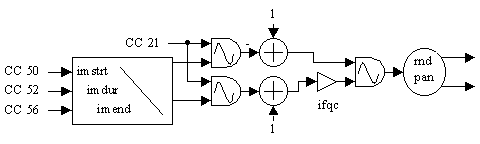

Real-Time
Departments

Bird Calls
Hans Mikelson
rtbirds.orc rtbirds.sco csm.bat
Adapting Bird Calls for Performance
For the real-time section I have converted my bird call instrument into a real-time instrument. I went through and tried to optimise it for performance. The final result relies on both frequency and amplitude modulation to create the sound. The rate of modulation ramps between two values set by continuous controllers. The starting modulation rate is set by controller 50 and the final rate is set by controller 56. The time it takes to ramp between these two values is set by controller 52. Modulation depth is set by controller 21.
imstrt midictrl 50, 0, 50 ; Mod start
imend midictrl 56, 0, 50 ; Mod end
imdur midictrl 52, 0, 2 ; Mod duration
ipan = rnd(1) ; Random panning
kmdpth midictrl 21, 0, 1 ; Mod depth
; Ramp from the start rate to the end rate
kmrate linseg imstrt, imdur, imend, imdur, imend
kamod oscil kmdpth, kmrate, 1 ; Amplitude modulation oscillator
kfmod oscil kmdpth, kmrate, 1 ; Frequency modulation oscillator
aout oscil 1-kamod, (1+kfmod)*ifqc, 1 ; Birdcall sound
outs aout*kamp*sqrt(ipan), aout*kamp*sqrt(1-ipan)

Figure 1. Bird call flow diagram.
This is a fun little real-time instrument especially if you have pet cats. With a little practice you can make some fairly realistic sounding bird calls.